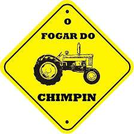
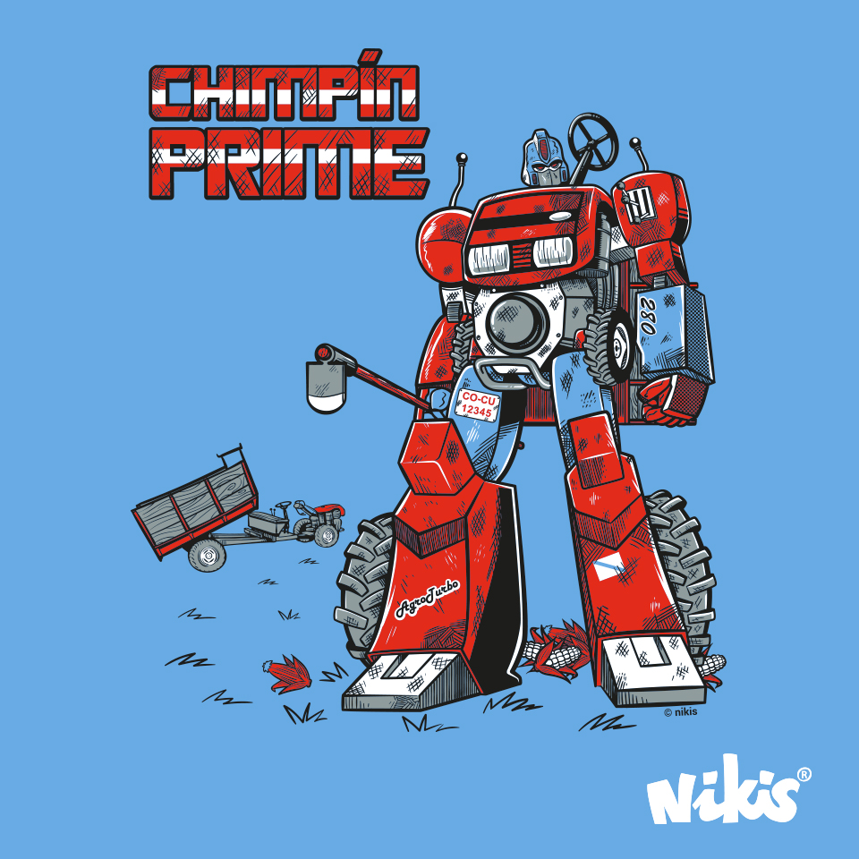

QUIERES MUCHO A TU CHIMPÍN pues para que estea contento y feliz sigue en esta página y te lo enseñamos
1. Tener un chimpín
2. El chimpín tiene que ser tu dios tienes que rezar 15 veces al día
3. Le tienes que matener al lado de la chimenea con una manta y su desayuno
4. Aliméntalo con gasolina de chimpiripinpín la mejor del mercado chimpinero
5. Si tu chimpín esta gordo sácalo a la finca para entrenar y que tenga una tableta de chocolate
6. Cuanto más antiguo sea tu chimpín mas potencia chimpinera tendra
7. Lo mejor esque todo lo que quieres para tu chimpín esta en nuestra tienda que aún no esta abierta
8. Para ir a cualquier sitio puedes usar tu chimpí ya que alcanza los 300km por tierra y 1000km por aire en modo vuelo
9. #GALICIACALIDADE
10. VIVAN LOS CHIMPÍNS
Humberto benito rodolfo josé etc...
Goldon Dumper Stil Ferrari

El lugar de donde los chimpínes son autóctonos es en GALICIA

Con el chimpín puedes ganar una carrera
Para tener un chimpín transformer
Puedes hacer drift

Hasta han hecho una cancion para los chimpíns